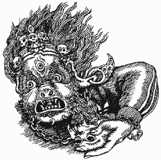
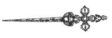
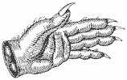
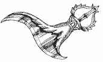
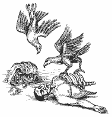
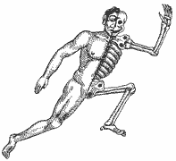
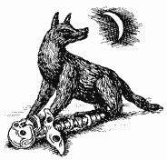

УРФИН И ФИЛЯ
УРФИН И ФИЛЯ
Урфина прозвали Урфином за зверскую рожу и
злобный нрав. Филю ласково называли Филей из-за кроткого характера и милой
улыбки. Филя вел себя как инопланетянин. В кругу друзей был задумчив и молчалив.
Тихонько напевал себе что-то под нос, рисовал или писал стихи. Урфин был
барабанщиком. Он крепко стоял на земле на всех четырех ногах. Бухал, говорил
громко и без умолку. Как-то в порыве гнева попытался выколоть собеседнику глаза
барабанными палочками.
В Туву мы поехали вместе. Урфин очень хотел
исправиться. Поэтому заказал себе обряд очищения у тувинских шаманов. Мы с Филей
оказались там случайно, просто за компанию с Урфином. Когда шаманы приступили к
камланию, я даже попытался сбежать, но не успел. Шаманы окружили нас и начали
энергично стучать в бубны.
На следующий день я зашел в институт языкознания.
Зав. сектора востоковедения обещала показать мне какие-то сутры. Однако, увидев
меня, она помрачнела и отошла к окну. "К сожалению, с вами нельзя иметь дело", -
сказала она. "В смысле?" - удивился я.
- Здесь слухи быстро
распространяются. Вы же вчера были у шаманов.
- Ну и что? Нормальные
шаманы...
- Нормальные-то они нормальные, но только слабые.
- ?
-
Духов вызвать они могут, но справиться с ними не в силах. Духи им
неподвластны.
- И что это значит?
- А то, что зря вы обряд очищения
коллективно проходили.
- Не понял...
- Если даже дух из кого-то и
выселился, то наверняка тут же в кого-нибудь другого вселился. Например, в
вас.
И она повернулась ко мне спиной. Смущенный, я вернулся в гостиницу.
Урфин медитировал, сидя в позе лотоса. Филя куда-то исчез. Я лег спать. Проснулся
от страшного грохота, будто разорвалась бомба.
Фейерверк осколков мелкой
крошкой осыпал меня с ног до головы. Передо мной стоял Филя. В руке он сжимал
горлышко от пивной бутылки. "Ты что, решил сыграть в террориста Гриневицкого?" -
спросил я. Но он лишь мычал и качался.
Утром он рассказал, что произошло.
Оказывается, он бухал где-то неподалеку с руководительницей ансамбля староверов
"Актай". В какой-то момент попросил, чтобы она предъявила ему свою "мандалу".
Руководительница обиделась и съездила ему по физиономии. Тогда Филя напился еще
сильнее. Побежал домой, чтобы поделиться со мной этой историей. Увидел, что я
сплю. Дальше якобы не помнит.
Кровь от порезов стекала с моего тела на пол.
Но душе было приятно и хорошо. Я снова был спокоен. Я знал, в кого вселился дух
Урфина.
В оставшиеся до отъезда дни Урфин постоянно улыбался, медитировал и
читал мантры. Филя где-то пропадал.
В поезде он пропил гитару.
Вчера мы
вернулись в Москву.
Урфин поехал к себе, а Филя решил остаться у меня.
Вечером, как я узнал, к Урфину приходил недовольный сосед. Его раздражало, что
Урфин слишком громко стучит в барабаны. Урфин, против обыкновения, напоил соседа
чаем. Подарил ему несколько буддийских книжек. Звал заходить в гости почаще и
вместе слушать музыку.
Я же сегодня утром был разбужен соседкой снизу. Она
трясла меня за ноги и кричала: "Вставай, там ваш тетю Валю убивает". Я ринулся
вниз. Увидел, как хлопнула дверь. Из квартиры тети Вали вылетел босой Филя и,
рыча, скрылся на улице. Я нерешительно переступил порог. Тетя Валя билась в
истерике и глядела на мир безумными выпученными глазами.
Тут вдруг я
вспомнил последние слова шамана. Он сказал Урфину, что обряд действует только два
месяца. Затем дух либо вернется обратно, либо вселится в кого-нибудь еще.
Наверняка в того, кто будет поблизости, подумал я. И бросился назад в квартиру.
Планета большая. Срочно пора собирать рюкзак.
САША КАХЕМЧИК

Как-то мы посетили кызыльский Музей политических репрессий.
Музей был открыт, но абсолютно пуст. "Есть здесь кто?" - крикнул я.
Заскрипели полы, и откуда-то из глубин маленького деревянного домика вынырнул
тщедушный человечек в кепке. Человечек с ходу стал показывать нам экспозицию,
попутно переводя подписи к фотографиям с тувинского на русский. Звали человечка
Сашей. Он свободно цитировал разных авторов, от Лазарева до Солженицына, и
вообще знал так много интересного, что мы приняли его за экскурсовода.
Впоследствии я узнал, что в музее он оказался случайно, раньше был милиционером,
а сейчас вообще-то назначен местной мафией присматривать за бильярдным залом в
гостинице "Алтынлык". Вот несколько из рассказанных им историй.
Отец
В этом здании находились застенки НКВД и, прямо в той комнате,
где мы сейчас стоим, пытали заключенных. Пытали зверски, по-азиатски, забивали
гвозди под ногти и сажали на стулья с приделанными к сидениям штырями. 
Мой отец, когда попал сюда, весил сто двадцать девять килограммов, а когда вышел - сорок
семь. Он вернулся в горы, но в таком виде стеснялся придти домой. Жил в бараке с
бомжами. Его случайно дочка узнала по жестам. Говорит ему: "Что же, ты, батя,
домой не идешь?" А он: "Как я в таком виде в дом войду?"
Тезка
Когда нам первые паспорта выдавали и записывали фамилии, то
русские паспортистки все путали. Ведь у нас сначала фамилию родовую говорят, а
потом уже имя. Так и Шойгу перепутали, он на самом деле не Шойгу Сергей
Кужугетович, а Кужугет Сергей Шойгуевич. Моего отца тоже перепутали. Отец из рода
Ондаров, Ондар Кахемчик он. Вот приходит отец к паспортистке, говорит это, и она
Кахемчик как фамилию записывает, а Ондар как имя. Так я получился Кахемчик Александр
Ондарович. Долгое время думал, что мы одни в Туве Кахемчики. А потом как-то иду по
дороге, рядом иномарка останавливается, меня хватают и вывозят за город. Там
бандиты конкретные сидели. Вытащили они меня из машины и давай разминаться,
кулаки на мне пробовать. "Сейчас, - говорят, - будем тебя мочить". Я им: "За
что?"
- Как за что, ты же Саша Кахемчик?
- Ну я.
- Ты у нас в
Красноярске сто тонн спирта увел?
- Нет, не уводил.
- Как не ты, вот
написано, Александр Кахемчик.
Я смотрю в их бумажку с паспортными данными, там,
действительно, Александр Кахемчик, только не Ондарович, а Ооржакович. Еще, значит,
кого-то паспортистки перепутали. Только, слава богу, не из наших, из Ондаров, а
из Ооржаков. "А вы меня видели?" - спрашиваю. "Нет, не видели, - отвечают, - тот,
кто видел, он сейчас в гостинице сидит". "Поехали к нему, - говорю, -
разбираться, не я это". Уговорил я их, поехали к нему, он сразу понял, что
обознался. Угостили меня, напоили. Оказалось, что тот Кахемчик вообще сын прокурора
республики. Отправились они в результате его мочить.
Арака
Как-то выпил я двенадцать пиал араки. Очнулся, гляжу, кругом вода. Сверху вода,
снизу и сбоку. Чудом вынырнул. Оказалось, я под аракой в реку прыгнул. Время
осеннее. Ветер, дождь. Вылез я на берег и понял, что в таком виде стыдно домой
возвращаться. К тому же течение быстрое, оказался я уже километра за полтора от
дома. Побежал в другое село, думал, оно неподалеку. На мне майка, штаны
тренировочные, а ноги босые. Сбил их в кровь, но боли не чувствовал. Так бежал
всю ночь. Потом выяснилось, что до того села шестьдесят семь километров было.
Когда добежал, понял, что в таком виде тем более не могу появиться - весь
грязный, ноги в крови. Побежал дальше, к другим родственникам, а там еще
километров двадцать пять. Чувствую, нет сил совсем. Решил по реке доплыть. Это
уже другая река, вошел в воду, а там мель. Речка, оказывается, пересохла, не
поплывешь. Попил я воды и пошел дальше. Тут понос начался, видимо, в воде
водоросли гнили, она и попортилась. Идти мочи нет, упал, все, думаю, полный
позор, сейчас умирать буду. Но слышу, мотор ревет, спасение пришло. По той
заброшенной дороге грузовик проезжал. Я сзади прицепился, всю дорогу дристал.
Почти до самого Чадаана доехал. Там в деревне невестка моя живет, слава богу, она
на огород уехала, картошку собирать. Я в окно - юрк, и давай отсыпаться. Так я
под аракой всю Туву пересек.
Племянник
Все из-за водки.
Раньше, когда араку пили, такого не было. А как водку завезли, тувинцы друг друга
резать начали. Вечером зарежет по пьяни, а утром не помнит ничего. Как-то шел я
по улице, а мне навстречу человек. Вижу, идет с явным желанием убить кого-нибудь.
Приблизился он ко мне, а тут свет от фонаря мне на лицо упал. Он присмотрелся, и
пошел дальше. Потом я захожу в милицию по своим каким-то делам, смотрю, он в
клетке сидит. "Дай, - говорит, - сто рублей, выкупи меня отсюда". "Я, - говорю, -
с какой стати?" А он: "Я же твой племянник, сын твоего брата Коли". "А помнишь, -
спрашиваю, - как ты меня два часа назад зарезать хотел?" "Помню, - отвечает. -
Повезло тебе. Как светло стало, так я понял, что ты мой дядя".
Рука

Как-то знакомые мои поехали всемером курган раскапывать. Один
залез внутрь и вытащил огромную кисть руки. По руке потом вычислили рост ее
обладателя - два метра шестьдесят сантиметров получилось. Так вот, увидев руку,
так перепугались, что тут же ее обратно уронили и срочно назад вернулись. Из тех
ребят шестеро уже окочурились, один пока еще дышит, все зовет снова съездить.
Вообще не принято у нас, у тувинцев, то, что схоронено, раскапывать.
Нож
У каждого тувинца есть нож. У меня тоже был, прадедов. Точнее, два
ножа, к большому еще маленький прилагался, в ножнах для них сделаны два
отверстия. Полетел я однажды на самолете. Меня офицер пограничный задержал за
оружие, штрафовать стал. Понял я, что он нож хочет.
"Смотри, - говорю, - таким путем нож к тебе придет, ненадолго задержится. Добром дело не кончится".
Он не поверил, посмеялся, взял нож. Потом, через много лет, я узнал, что скоро этого
пограничника по пьяни зарезали. Нож пятерых владельцев сменил и ко мне вернулся.
Я как-то по рынку шел, мне старик один нож стал предлагать, и я смотрю, мой! Я
его сразу признал, хоть и был он изрядно покоцанный. Все лезвие искромсали,
видно, тот офицер им баранину, как топором, рубил. Я нож подержал в руках и в
Енисей выбросил. Пускай он больше никому не достанется. А себе вот этот,
маленький, оставил.
ШАМАН

Эту историю рассказала Раиса Кыргысовна,
сотрудник министерства культуры, доктор
исторических наук
Был здесь из молодых один сильный шаман, Игорь
Петрович. Лечил он от эпилепсии одного парня. Парня убили, машиной переехали.
Отец этого парня стал Игоря Петровича уговаривать, чтобы отомстил убийце. А Игорь
Петрович отказывался, он был добрый шаман. Полгода отец парня к нему ходил, а
потом сказал, что не может жить без сына, наложит на себя руки. Тогда шаман
согласился и пошел с ним на кладбище. Разрыли они могилу, открыли гроб. Шаман лег
на тело юноши и посмотрел ему в лицо. Так он вычислил убийцу. Через пару дней
того не стало, застрелили в ресторане "Кызыл". После чего сам шаман
умер.
ДЕВОЧКА
Рассказала Светлана Хоортековна, зав. сектора востоковедения института
языкознания
Моя племянница людей видит. Полчеловека может увидеть.
Вот недавно она про одного знакомого сказала, что от него только половина
осталась. Так он вскоре после этого умер. Полдома она однажды увидела. Скоро этот
дом опустел. Кто умер, кто уехал насовсем.
МАРТ-ООЛ
Лисица, ясновидящая и женщина-майор
Действующие лица:
Бабс - растаман, Ваня - раздолбай, Раиса Кыргысовна - сотрудник министерства культуры, Март-оол - ее водитель и я.
Место действия:
Тува, Кызыл - тюрьма "Чаа-холь" - Кызыл.

Мы поехали выручать Ваню. Бабса отпустили, а Ваню нет, и теперь Бабс сидел вместе со мной в машине. Операцией руководила Раиса
Кыргысовна. В прошлый свой приезд Ваня жил у нее, и теперь Кыргысовна опекала его
как родного. "Куда едем?" - спросила она у меня. "Вначале в Шагонар. Думаю, что
его там держат", - ответил я. Проехали горы, название которых переводилось как
"Груди женщины" - два округлых холмика, миновали гору "Сердце марала", и вот по
правой стороне дороги стал виден Хайыракан - священная шаманская гора странного
светло-серого цвета, зубья вершин которой напоминали хребет динозавра. За
Хайыраканом были плантации конопли и Шагонарская зона, на которой, как мы
предполагали, содержали Ваню. Соваться в зону без знакомств не имело смысла,
поэтому около часа мы ждали в машине, пока наш водитель Март-оол пытался
разыскать каких-нибудь родственников. А родственнки у тувинца есть, понятно, в
каждом селе. Наконец, узнав, что в Шагонар Ваню не переводили, отправились
дальше в Чаа-холь. Выяснилось это просто - один из родственников Март-оола,
начальник местного уголовного розыска, зашел в СИЗО и крикнул: "Русские есть?"
Отозвался всего один русский, который сидел за убийство жены и, очевидно, не был
Ваней.
Еще около часа мы добирались по немыслимо разбитой дороге до Чаа-холя.
Бабс указывал путь. Только мы остановились у тюрьмы, как я увидел Ваню, бодрым
шагом направлявшегося к нам. Первой из машины вышла Раиса Кыргысовна. В руках она
держала шкурку песца - подарок ментам. За ней выскочили мы с Бабсом.
- Все
нормально, меня выпускают.
- Как так?
- Ясновидящая велела.
- В
смысле?
- Ну, они позвали ясновидящую, она на меня посмотрела и сказала, чтоб
отпускали.
Рядом нарисовалась крайне улыбчивая женщина-майор. "Какой у вас
Ваня хороший, - с жаром принялась объяснять она мне. - Мы не могли его не
отпустить. Он же настоящий буддист". Оказалось, что Ваня медитировал и читал
мантры все ночи напролет. Майор договорилась с Ваней о том, чтобы у него
остановиться, когда она проездом будет в Москве, и мы заспешили обратно.
Стемнело. Март-оол довольно быстро устал. Остановил машину и тут же уснул. "Он
такой добрый, такой хороший, - пояснила Раиса Кыргысовна. - Все время работает, не спит
совсем. Сейчас немного отдохнет, и поедем дальше". Минут через пять послышался
цокот копыт. Раиса Кыргысовна бросилась будить водителя. "Март-оол, просыпайся, это
конокрады. Могут нас застрелить". Март-оол проснулся, но машина упорно не
заводилась. Пока все суетились, цокот стих где-то вдали. Мы наконец сдвинулись с
места, однако далеко отъехать нам не удалось. Дорогу перебежала лисица, и
Март-оол резко затормозил.
- Что там? - спросила Раиса Кыргысовна.
- Лысыц,
- ответил Март-оол.
- Справа налево бежала, или слева направо?
- Слева
направо, - мрачно ответил Март-оол.
- Тогда начинай.
Неизвестно откуда
Март-оол извлек несколько веток можжевельника, зажег их и принялся окуривать нашу
"газель". Процедура заняла около получаса. Затем еще столько же мы ждали, пока
мимо проедет хоть одна машина. Только после этого Март-оол достал из-под сиденья
странного вида кепку, нахлобучил ее задом наперед и мы двинулись дальше. Я
задремал, но был разбужен каким-то шуршанием. Открыв глаза, я обнаружил, что
кепка исчезла с головы Март-оола.
- Где кепка?
- Какой кепка?
- Та,
что была у тебя на голове.
- А, тот кепка, какой-то ненужный кепка, чужой
кепка, черт его знает, зачем он в машину попал, вот я его и выбросыл в
окно...
Я снова заснул под неубедительное бормотание водителя. Проснулся уже
в Кызыле, когда мы высаживали Раису Кыргысовну. У самого нашего дома Март-оол
сказал Ване: "Слушай, если все же прыдется сыдеть в Шагонаре, обращайся ко мне. У
меня там все положенцы знакомые".
- Как это?
- Да я оттуда в прошлом году
откынулся.
- Кому перешел дорогу?
- Да у нас за убыйство мало дают. Я два
года писал всюду, говорыл, что он сама на меня напал, сама на свой нож напоролся,
не верыли. Дали "умышленное убыйство в состоянии агрессии". Вы только Рае не
говорыте, она ко мне хорошо относытся, не знает. Музыканты все знают, но ей не
говорят.
И Март-оол хохотнул, сверкнув большими белыми зубами, которые
торчали вперед, как вершины Хайыракана.
Террорист
Когда мы уже вернулись в Москву, узнали, что по иронии судьбы в зону попал сам
Март-оол. Произошло это так. Март-оол шел мимо Дома правительства и обнаружил,
что перед огромным серым зданием собрались на тихую манифестацию его
коллеги-водители. Манифестировали они, надеясь то ли на повышение зарплаты, то ли
на понижение налогов, то ли на еще что-то подобное. Видя, что их акция остается
абсолютно никем не замеченой, Март-оол вернулся на работу, позвонил в милицию и
сообщил, что в здание заложена бомба. Начался жуткий переполох. Съехались
представители ФСБ и МВД. Из Дома правительства срочно эвакуировали триста
шестьдесят чиновников, включая председателя правительства и президента. Работа
всех органов власти была заблокирована. Весь день провели в поисках бомбы. Бомбу
не нашли, зато к вечеру по отпечаткам пальцев нашли Март-оола. Предъявив ему
обвинение по статье "терроризм", этапировали в Шагонар. Раису Кыргысовну вызвал к
себе министр внутренних дел, по слухам, известный шаман. Он долго смотрел на нее
сквозь классические полутемные очки, затем со значением сказал: "Хорошо же вы
разбираетесь в людях". И показал ей досье на Март-оола, огромное, как шаманский
бубен.